4 세포 내 신호전달계
4.1 약물-수용체 작용 기전을 넘어서
정신약물학 혁명이 일어난지 어언 70년의 세월이 흘렀지만, 항정신병 약물의 작용 기전을 연구하거나 신약을 개발하는 이론적 토대는 수용체 결합 수준에서 쉽사리 벗어나지 못하고 있다. 그러나 수용체에 결합한 후부터 약리 효과가 일어날 때까지는, 지극히 복잡다단한 세포 내 프로세스를 거쳐야만 한다. 휴먼 게놈 프로젝트를 원동력으로 유전학이 급격히 발전하면서, 궁극적인 질병의 원인과 치료 기전은 유전자 수준에서 찾아야 한다고 믿는 학자들이 많다. 그렇다면 수용체에 결합한 약물 역시 어떤 식으로든 유전자 발현에 영향을 미쳐야 할텐데, 이 과정을 밝혀내긴 위해선 세포 내 신호전달계를 낱낱이 파헤치는 수 밖에 없다.[1]
게다가 약물이 반드시 수용체, 특히 세포막에 위치한 수용체에 결합해야 효과를 발현한다는 것도 엄밀한 의미에서는 사실이 아니다. 클로르프로마진, 할로페리돌을 비롯한 다수의 항정신병 약물은 소수성(hydrophobic)인 방향족 고리(aromatic ring)와 친수성(hydrophilic)인 곁가지로 구성되어 있다. 이런 식으로 소수성, 친수성 구조를 동시에 갖고 있는 화합물을 cationic amphiphilic drug (CAD)이라고 칭하며, 이들은 세포막과 같은 이중지질막을 통과하여 세포 내 리조좀에 축적되곤 한다.[2] 세포 내로 들어온 약물은 수용체를 거치지 않고도 G 단백질을 자극하여 하위(downstream) 신호전달계를 활성화시킬 수 있다. 동시에 sphingomyelin을 비롯한 지질 대사에 영향을 미쳐 예상하지 못한 약리 효과를 내기도 한다. 예를 들어 항정신병 약물이 콜레스테롤 생성을 방해하거나, 리조좀 기능을 방해하여 항암 효과를 내는 것은 이런 예상하지 못한 효과 중 하나이다.[3,4]
항정신병 약물의 효과를 설명하는데 주로 사용되는 수사법은, 뇌를 복잡한 배선이 얽히고 설켜 있는 전자회로로 묘사하는 것이다. “변연계에 위치하는 도파민 배선은 망상과 환각을 낳기 때문에 어떻게든 차단하는 것이 좋다. 반면 전전두엽에 위치한 도파민 배선을 통해 흐르는 전류는 최대한 늘리는 것이 좋다. ”는 식의 수사법이 널리 통용된다. 수용체를 차단한다는 것은 마치 해당되는 회로를 통한 전기신호의 흐름을 차단하는 것처럼 들린다.
이러한 수사법은 직관적이고 이해하기 쉽지만 사실을 있는 그대로 묘사하진 못한다. 항정신병 약물의 효과가 투여 직후에 나타나는 것도 아니고, 약물 효과가 그저 그날그날의 증상을 막아주는 것에 그치는 것도 아니다. 꾸준한 약물 복용은 신경망의 기능적 변화를 낳으며 장기적 시점에서 보면 구조적 변화까지도 가져온다. 다시 말하여 약물의 효과는 당장의 전기 흐름을 통제하는 것에 그치지 않으며, 전자회로 자체를 뜯어고치는 것까지 확장된다. 1970년대 중반 이후, 기억과 학습에 대한 우리의 편견을 근본부터 뒤집어 엎은 신경가소성(neural plasticity)이란 개념은, “기능과 구조가 사실은 하나이며, 치료의 궁극적 목표는 구조의 변화가 되어야 한다”는 사실을 가르쳐주었다. 이러한 개념의 확장을 따라가기 위해선 세포 내 신호전달과 뒤따르는 유전자 발현까지를 모두 이해해야만 한다.
이런 식으로 관점의 폭을 넓히다보면, 단순히 수용체에 결합할 수 있느냐 없느냐를 넘어서, 신호전달계를 구성하는 특정한 분자, 특정한 경로에 목적한 효과를 발휘할 수 있느냐를 기준으로, 향상된 효과, 낮은 부작용, 보다 넓은 적응증을 갖춘 새로운 약물을 개발할 수 있을 것이다.[5] 실제로 구태의연한 관점에서 벗어나, 한발 앞으로 내디디려는 움직임이 관측되고 있다. 2019년 미국 FDA는 루마테퍼론 (Caplyta®)을 조현병 치료에 사용하는 것을 허가하였다. 이름조차 의미심장한 Intra-Cellular Therapies1에서 개발한 이 신약은, butyrophenone 유도체로서 D2와 5-HT2A를 비롯한 몇 가지 수용체 길항제 역할을 한다. 그러나 루마테퍼론의 작용은 여기서 그치는 것이 아니라 <s>mTOR2</s>와 GSK-3 경로를 조절함으로써, NMDA, AMPA 수용체를 통한 글루타메이트 활성을 촉진하는 성질을 갖는다.[6]
1 Intra-Cellular Therapies, Inc.: 2002년 창립된 미국의 제약회사. 노벨상 수상자인 Paul Greengard가 공동창립자로 참여하였다. 정신질환 치료제인 루마테퍼론과 함께, 심장병 약물로 phosphodiesterase 억제제인 Lenrispodun을 개발 중이다.
2 Mammalian target of rapamycin (mTOR): phosphatidylinositol 3-kinase-related kinase 계통에 속하는 인산화 효소로 mTOR complex 1과 2를 만들어 다양한 생체 과정에 참여한다. 생체 내외의 산화 스트레스, 인슐린과 같은 호르몬 수치 등에 반응하여 활성화되며, 영양분을 분해하여 에너지로 전환하는 세포 내 대사 과정을 조절한다.
루마테퍼론에는 “선택적/동시적 세로토닌, 도파민, 글루타메이트 조절제(selective and simultaneous modulator of serotonin, dopamine and glutamate)” 혹은 ”도파민 수용체 인산화 조절제(dopamine receptor phosphoprotein modulator)“라는 거창한 수식어가 따라붙어있다. 실제로 루마테퍼론이 선전문구에 부합하는 신약인지는 제쳐두더라도, 세포 내 신호전달계에 대한 작용 기전이 약물의 우수성을 강조하는데 전면으로 등장하는 것은 시대적 변화를 반영하는 것 같다.
4.2 세포 내 신호전달계의 개관
약물 작용 기전을 연구하는 초점이 세포 내 신호전달계(intracellular signal transduction)로 옮아간다 할 지라도, 수용체가 더 이상 중요하지 않다는 뜻은 아니다. 다만 연구의 주제가 수용체 결합 후 어떤 일이 벌어지는가로 옮겨지는 것 뿐이다. 약물은 다수의 수용체에 결합하며, 그 무궁무궁한 조합 중 특정 패턴만이 원하는 약리 효과를 일으킨다. 수십년 간 연구가 진행되어왔어도 일정한 패턴을 찾아내지 못했기 때문에, 자연히 답이 없는 곳을 뒤지고 있지 않았냐는 반성이 따르게 되었다. 만약 효과적인 수용체 차단 패턴이 모두 동일한 세포 내 신호전달계를 가리키고 있다면, 그리고 동일한 계열의 유전자를 향하고 있다면, 약물 작용 기전의 이해뿐 아니라, 조현병의 정체를 밝히는데도 큰 진전이 있을 것이다.[7]
약물이 결합하는 수용체는 대체로 세포막 표면에 위치한다. 약물이 결합하면 이온 채널이 열려 세포막 내외의 전압 차이가 발생하거나, G 단백질을 통해 세포 내 효소가 활성화된다. 이 단계의 신호전달과정을 세포막 신호전달(transmembrane signal transduction)이라 부른다. 세포 내 신호전달(intracellular signal transduction)은 그 다음 단계로, 생성된 전기적 변화 혹은 활성화된 수용체가 2차 전달자(secondary messenger)를 만들고, 주요 단백질들의 인산화를 통해 점점 더 아래 단계(downstream)로 신호를 전달하며, 종국에는 특정 유전자 발현을 유도하는 과정까지를 말한다. 경우에 따라 생성된 단백질의 변형, 후성유전학적 조절 등이 포함되기도 한다.
2차 전달자라는 명칭은 1차 전달자와 대비시키기 위해 만들어진 이름이다. 1차 전달자는 약물이나 내인성 리간드를 포함하여 수용체에 결합하여 신호를 전달하는 물질을 가리킨다. 이는 세포외 정보를 세포막에 전달하는 과정을 담당한다. 이에 비해 2차 전달자는 세포막에서 감지된 정보를 세포질 내로 전달하게 된다.3 세포 내에서 이루어지는 생체 과정(biological process)에는 분열/성장/분화, 이동/분비, 생존/자멸사 등 다양한 과정이 있으며, 2차 전달자는 이 모든 프로세스에 관여한다.
3 대표적인 2차 전달자로 cyclic adenosine monophosphate (cAMP), cyclic guanosine monophosphate (cGMP), inositol triphosphate (IP3), diacylglycerol (DAG) 그리고 calcium (Ca2+)이 있다.
여러가지 수용체, 게다가 그 아형들까지 따지면 상당히 많은 종류의 수용체가 있는데 비해, 세포 내 신호전달 체계는 중심이 되는 2차 전달자의 종류에 따라 크게 4가지 방식으로 분류할 수 있다.
- 세포막 전압차에 의해 Ca2+가 유입되고 난 후에 Calcium/calmodulin-dependent protein kinase II (CaMKII)에 의해 매개되는 신호전달
- G 단백질 결합 수용체가 흥분하면서 생성되는 cyclic AMP (cAMP)와 protein kinase A (PKA), 혹은
IP3/DAG4와 protein kinase C (PKC)에 의해 매개되는 신호전달 - 세포막의 receptor tyrosine kinase가 흥분하면서, 일련의 kinase인 Ras-Raf-MEK-ERK 경로를 통해 매개되는 신호전달
- 세포질 내 혹은 세포핵 내에 위치하는 수용체가 직접 활성화되면서 매개되는 신호전달
4 Inositol triphosphate/diacylglycerol
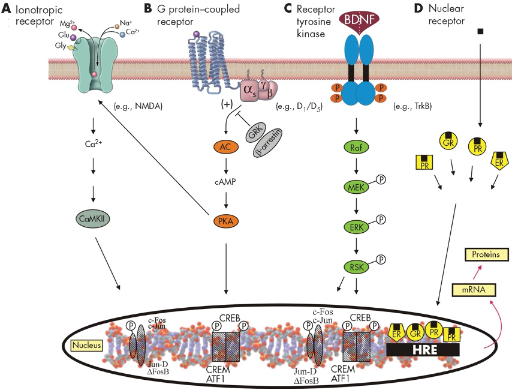
(Yu, J-Z and Rasenick, MM, Basic Principles of Molecular Biology and Genomics, In The American Psychiatric Association Publishing textbook of psychopharmacology / edited by Alan F. Schatzberg, Charles B. Nemeroff., 2017, American Psychiatric Association Publishingp46-105)
4.2.1 G 단백질 결합 수용체를 통한 전달
G 단백질 결합 수용체(G protein coupled receptor, GPCR)는 아마도 약물 작용을 이해하는데 가장 중요한 수용체라 할 것이다.5 GPCR를 이해하기 위해선 먼저 단백질 인산화효소(protein kinase)가 무엇인지 이해해야 한다. 생화학에서 인산화효소(kinase)란 기질(substrate)에 인산기(phosphate group)를 전달하는, 즉 인산화(phosphorylation) 시키는 효소를 의미한다. 인산기는 인산에서 세개의 수소를 제거한 염기([PO4]3−)로 강한 전하를 띠기 때문에, 기질의 3차원적 구조를 크게 비틀 수 있다. 이렇게 에너지가 높은 인산기는 adenosine triphosphate (ATP)로부터 공여받으며, 이 과정에서 ATP가 소모되므로 인산화 과정은 상당한 에너지를 소모하는 과정이라 하겠다. 인산화 효소 중에서도 특히 단백질 인산화 효소(protein kinase)는 기질이 되는 단백질의 serine/threonine에 인산기를 붙여, 단백질의 3차원 구조를 변화시키는 효소를 가리킨다.
5 다양한 GPCR들이 차지하는 유전 정보는 포유류의 전체 게놈의 5%를 차지할 정도로 방대하며, 미국 FDA에서 승인받은 약물 중 34%정도가 GPCR를 통해 작용한다.[9]
Protein kinase A, G, C는 가장 대표적인 단백질 인산화효소이다. Protein kinase A (PKA)와 protein kinase G (PKG)는 각각 cAMP와 cGMP를 통해 활성화되며, protein kinase C (PKC)는 DAG에 의해, 혹은 직접적으로 Ca2+ 농도에 따라 활성화된다. 이 세가지 효소를 비롯하여 다양한 세포 내 단백질 인산화 효소들이 인산화기를 이리저리 전달함으로써 연쇄적인 신호전달을 일으킨다.
G 단백질 결합 수용체(GPCR)라는 이름이 의미하듯, 이들은 G 단백질과 결합할 수 있다. GPCR는 세포 외부에 존재하는 N 말단 (N-terminus), 세포막을 일곱번에 걸쳐 가로지르는 세포막 횡단 영역(transmembrane domain), 그리고 세포 내부에 존재하는 C 말단(C-terminus)으로 이루어진다. 세포막 횡단 영역의 특별한 구조 때문에 seven-transmembrane domain receptor (7TM)라고도 부른다.[10]
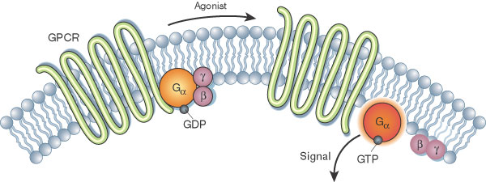
한편 G 단백질이란 guanosine triphosphate (GTP)와 결합할 수 있는 단백질이란 의미이다. 이는 α, β, γ 아단위로 구성된다. 평상시에 G 단백질은 GPCR에 연결되어 있으며, α 아단위에는 guanosine diphosphate (GDP)가 붙어있다. 만약 약물이 GPCR에 결합하여 신호가 전달되면, α 아단위에서 GDP가 떨어져 나가고 대신 GTP가 결합한다. 이는 에너지가 높기 때문에, 활성화된 α 아단위와 β, γ 복합체가 GPCR로부터 분리되어 세포막을 떠다니게 되며, 만나는 주변 단백질을 활성화시킨다.
세포막을 자유롭게 떠다닐 수 있게 된 α 아단위와 β, γ 복합체가 활성화시키는 가장 중요한 효소는 adenylyl cyclase이다. Adenylyl cyclase는 ATP로부터 cAMP를 생성하며, 이제 cAMP가 2차 전달자 역할을 할 모든 준비가 갖춰진다. 하지만 이렇게 cAMP 생성이 촉진되는 것은 Gs 형의 α 아단위가 활성화되었을 때이다. α 아단위에는 그 밖에도 Gi, G12/13, Gq 등이 존재하며, Gi 형의 α 아단위가 활성화되었을 때는 오히려 adenylyl cyclase의 활성을 억제한다. 대표적인 예로 도파민 수용체 중에서 D1,5는 Gs를, D2,3,4는 Gi를 자극하는 것은 이미 앞에서 살펴본 바 있다. (Section 3.2)
4.2.2 IP3/DAG 경로
한편 GPCR에 의해 Gq가 자극받은 경우에는, adenylyl cyclase가 아니라 phospholipase C-β (PLC-β)6가 활성화된다. PLC-β의 역할은 세포막에 존재하는 phosphatidyl inositol 4,5-bisphosphate (PIP2)를 inositol 1,4,5-trisphosphate (IP3)과 diacylglycerol (DAG)로 분해하는 것이다. 생성된 IP3와 DAG는 모두 2차 전달자 역할을 한다. 물에 녹는 IP3는 세포질로 확산되어 소포체(endoplasmic reticulum)에 저장된 Ca2+를 유리시킨다. 반면 물에 녹지 않는 DAG는 세포막 내에서 Ca2+의 도움을 받아 protein kinase C (PKC)를 활성화시킨다. PKC는 세포 내 다양한 타깃 단백질을 인산화시킴으로써 세포 내 프로세스를 자극한다.
6 Phospholipase C: 이 효소는 β, γ, δ, ε, ζ, η의 6가지 아형이 있으며, 이들 모두가 독특한 세포 내 기능을 담당하지만, GPCR와 연관되어 중요한 것은 β 아형이다.
Ca2+은 세포 내 기능을 조절하는데 결정적인 역할을 하기 때문에, 세포는 많은 에너지를 써가면서 세포 내 Ca2+을 세포 밖으로 퍼내고 있다. 이러한 Ca 펌프의 도움으로 세포 내 Ca2+ 농도는 평소에는 매우 낮게 유지된다. IP3/DAG는 급격하게 Ca2+ 농도를 높이는데, 작용을 마친 Ca2+은 Ca의 펌프에 의해 제거되어 Ca2+ 농도는 다시 원래 수치로 돌아간다. 이런 식으로 Ca2+ 농도는 증가와 감소를 반복하면서 일종의 파동을 일으키며, 이 파동의 진폭이나 파장이 세포 내 수많은 효과기7들의 작용을 동조시키는데 결정적 역할을 한다.
7 효과기 (effector): 세포 내 신호전달과정에서 생체 과정에 관여하여 기능을 발휘하는 생체 분자를 효과기라고 한다. 이에 반해 효과기에 신호를 전달하는 물질을 변환기(transducer)라고 한다. 하지만 세포 내 물질이 transducer인지 effector인지는 고정된 개념이 아니라 상대적인 개념일 뿐이다. 예를 들어 G 단백질을 transducer라고 했을 때 adenylate cyclase는 effector이지만, adenylate cyclase 역시 신호전달의 중간 단계에 불과하므로 transducer라고 볼 수 있다.
4.2.3 이온 채널을 이용한 신호전달
세포막에는 다수의 이온 채널이 존재하며, 이들 역시 세포 내외의 환경 변화에 따라 전도도가 달라진다. 특히 GPCR에 의해 활성화된 Gs, Gi, Go 아형의 G 단백질은 cAMP나 DAG와는 상관없이, 주변의 이온채널 들을 자극한다. 예를 들어 Gs는 심근과 골격근에서 Ca2+ 채널을 여는 반면, Gi/Go는 평활근(smooth muscle)에서 K+ 채널을 연다. GPCR는 이렇듯 이온 채널을 통해 세포 외 Ca2+가 세포 내로 유입되도록 하며, 동시에 IP3를 통해 세포 내에 격리되어 있는 Ca2+이 유리되도록 함으로써 Ca2+ 농도를 급격히 높인다.
4.2.4 Ca/Calmodulin kinase를 통한 신호전달
세포 내 Ca2+는 PKC 말고도 calcium/calmodulin kinase (CaMK)를 통하여 다양한 효과를 일으킨다.[12] 외부자극에 의하여 농도의 불안정한 동요가 생긴 Ca2+는 calmodulin과 결합하여 복합체를 형성한다. 이 복합체는 CaMK를 활성화시키고, CaMK는 연이어 다른 단백질들을 인산화시킨다. CaMK를 통한 신호전달은 심근에서 가장 활발하게 연구되었으나, 신경세포에서도 신경전달물질의 분비, 시냅스 가소성, 새로운 신경회로의 발달 등에 관여하고 있다.[12] 특히 CaMKII는 해마의 전체 단백질 중 1~2%를 차지할 정도로 비중이 크며, 아마도 장기 강화과 기억 형성에 핵심 역할을 할 것으로 믿어지고 있다.[13]
4.2.5 Receptor tyrosine kinase를 통한 신호전달
Receptor tyrosine kinase (RTK)는 세포막에 위치한 수용체로서 그 자체가 tyrosine을 인산화시킬 수 있는 성질을 띠기 때문에 이런 이름이 붙여졌다. 포유류 세포에서 다양한 성장인자, 사이토카인, 인슐린과 같은 일부 호르몬이 결합하여 다양한 기능을 발휘한다. 리간드가 RTK에 결합하면 단위체(monomer)로 존재하던 두 개의 수용체가 서로 결합하여 이합체(dimer)가 되며, 서로가 상대의 tyrosine기를 인산화시킴(trans-phosphorylation)으로써 활성화된다. 이렇게 활성화된 RTK는 SH2 domain8을 가지는 다양한 단백질들이 결합할 수 있는 도킹 부위로 작용한다. 이후의 신호전달 과정은 크게 두 가지로 나뉘는데, 이들은 1) ras-raf-MEK 경로와 2) PIP3-Akt-mTOR 경로이다.
8 C-terminal Src-homology 2 domain (SH-2 domain)
전자의 경로를 간략히 설명하면 다음과 같다. RTK의 도킹 부위에 Grb29가 결합하면 세포막 근처에 떠 다니던 Sos (son of sevenless)를 끌어당겨 Grb2-Sos 복합체가 만들어진다. 이 복합체에는 Ras-GDP가 결합하며, Sos는 Ras에 붙어 있는 GDP를 GTP로 바꿔줌으로써 Ras를 활성화 시킨다. 활성화된 Ras는 Raf를 세포막으로 끌어들여 활성화시키며, 활성화된 Raf는 이번에는 MEK (MAP kinase/ERK kinase)을 인산화시킴으로써 Raf-MEK-MAPK 경로를 통해 신호를 전달하게 된다. MAPK 신호전달에 대해서는 아래 절에서 논의된다. (6-4-3-4절)
9 Growth factor receptor-bound protein 2 (Grb2)
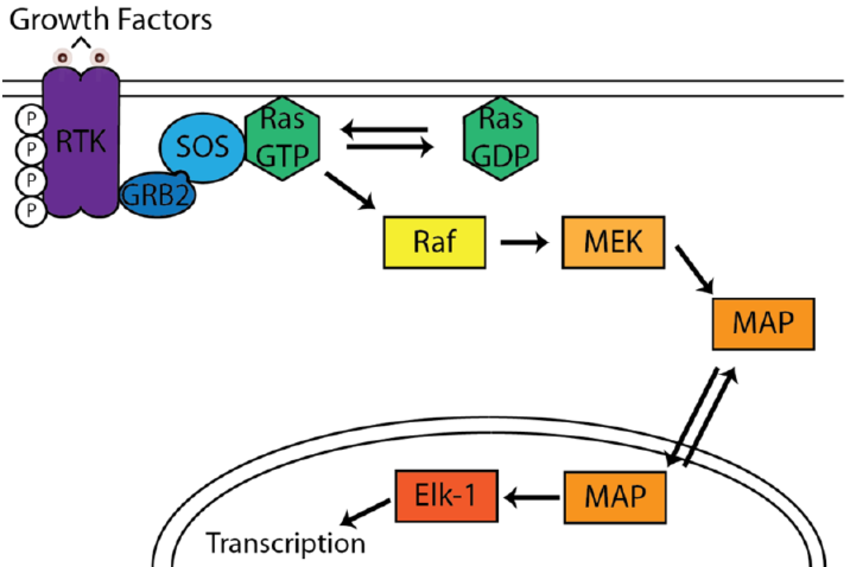
두번째 경로는 Akt를 통한 것이다. RTK의 도킹 부위에 PI3K (phosphatidylinositol 3-kinase)가 결합하여 활성화되면, PIP2 (phosphatidylinositol 4,5-bisphosphate)를 PIP3 (phosphatidylinositol 3,4,5 trisphosphate)로 전환시킨다.10 PIP3는 Akt1과 함께 <s>PDK111와 mTOR12을 세포막으로 끌어들여 복합체를 만든다. 이 복합체 내에서 이번에는 PDK1과 mTOR에 의해 Akt1이 인산화되고, 인산화된 Akt는 GSK-3 활성을 억제한다. (이는 β-arrestin/Akt1/PP2A 복합체와는 정반대이다.) Akt1/GSK-3경로에 대해서는 아래에서 논의된다. (Section 4.3.5)
10 PIP3는 이내 IP3와 DAG로 가수분해되며, 이들은 세포막에서 유리되어 세포 내 2차 전달자가 된다.
11 3-phosphoinositide-dependent protein kinase 1 (PDK1)
12 mammalian target of rapamycin (mTOR)
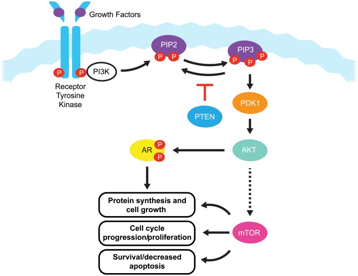
PIP3-Akt-mTOR 경로 (AR: androgen receptor 는 지울 것) [15]
4.3 GPCR 수용체를 통한 신호전달
정신약물학에서 주로 다루어지는 수용체, 즉 도파민 수용체를 비롯하여 세로토닌, 아드레날린, 무스카린성 아세틸콜린 등은 모두 GPCR이다. 이중 예외적으로 5-HT3 수용체와 니코틴성 아세틸콜린 수용체만이 이온 채널이다. 글루타메이트의 경우 AMPA, NMDA 수용체는 이온채널이지만, 대사성 수용체(mGluR)는 역시 GPCR이다. 이렇듯 항정신병 약물의 작용이 모두 GPCR과 연관되어 있기 때문에, 일부 학자들은 “항정신병 약물”이라는 명칭보다, “다중 GPCR 수용체 차단제 (multiple GPCR antagonist)”라는 용어가 더 적절하다고 주장할 정도이다.[16]
항정신병 약물을 투여하면, 일정한 패턴으로 세포 내 신호전달계를 통해 신호가 전달된다. 이 패턴은 약물에 따라 다르며, 약물 투여 후 시간이나 작용 뇌부위에 따라서도 다르다. 이런 차이가 어디에서 비롯되는 지는 확실하지 않다. 단순하게는 수용체 결합 프로파일의 차이에서 비롯될 것이라 예상할 수 있지만, 신호전달계에 대한 영향으로 시야를 확대하면 좀더 복잡한 조절 기전이 모습을 드러낸다.
정형과 비정형 약물의 차이 역시 세포 내 신호전달의 차이에서 유래될 수 있다. 예를 들어 할로페리돌은 선조체에서 PKA의 활성 및 mRNA 농도를 높이지만, 클로자핀은 오히려 이를 낮춘다.[17] 뇌 부위별 차이도 두드러지는데, 예를 들어 올란자핀을 투여하면, PKA 활성이 등쪽 선조체에서는 증가하지만 내측 전전두엽에서는 오히려 감소된다.[18] 물론 정형과 비정형 약물이 항상 반대되는 작용을 하는 것은 아니다. PKA가 인산화시키는 단백질 중에서 DARPP-3213라는 것이 있는데, 할로페리돌과 클로자핀은 모두 DARPP-32 인산화를 증가시킨다.[20] 이렇듯 세포 내 신호전달계에 미치는 영향을 살펴보면, 정형/비정형의 구분이 큰 의미가 없다는 것을 알 수 있다. 각각의 항정신병 약물은 독특한 변화를 일으키고 있으며, 이는 치료 효과는 물론 부작용의 차이를 만들어낸다.
13 DARPP-32: 도파민 뉴런에서 PKA의 기질로 발견되었다. 신경전달물질, 신경조절물질, 신경펩타이드, 호르몬 등의 신호에 의해 인산화 정도가 변화하기 때문에, 세포 내 신호전달과정에서 이질적인 입력 신호들을 하나로 통합하는 역할을 하는 것으로 여겨진다.[19]
세포 내 신호전달계의 변화를 연구하는 것은 이처럼 약물 간의 차이를 규명하기 위해서 뿐 아니라, “과연 약물의 효과는 어떤 과정을 거쳐 발현되는가”라는 보다 근본적인 문제에 답하기 위함이다. 만약 항정신병 약물의 작용 기전을 묻는 질문에 대해 “D2 수용체를 차단하여 망상과 환각을 만들어내는 잘못된 신호전달을 차단한다”고 답한다면, 이는 수사법을 진실과 혼동한 것에 지나지 않는 순진한 답변이 될 것이다. 궁극적으로 약물의 장기적인 효과는 유전자 발현의 변화에서 비롯된다. 일반적으로 한번 분화된 세포는 정교한 조절 메커니즘을 통하여, 해당 세포가 맡은 역할에 맞게 유전자 발현을 좁은 범위로 제한한다. 이런 세포가 지금까지와는 다른 방식으로 단백질을 생성하도록 유도하려면, 세포로 하여금 상황과 역할이 달라졌다는 것을 인식하게끔 새로운 신호를 꾸준히 전달해야 한다. 약물이 세포 내 신호전달계를 통해 행하는 효과는, 이처럼 달라진 신호를 핵 내의 유전자 발현 기전에 꾸준히 보내는 것이다.
4.3.1 Canonical 경로와 non-canonical 경로
앞서 GPCR을 통한 신호전달을 설명하면서 (Section 4.2.1), Gs/Gi는 cAMP의 활성을 조절하며, Gq는 PLC-β를 통해 Ca2+의 농도를 변화시킨다는 것을 살펴보았다. 이렇게 G 단백질을 경유하는 신호전달 경로를 canonical14 경로라고 부른다. 이에 비해 GPCR이 G 단백질을 경유하지 않고 작용하는 과정을 non-canonical 경로라고 하는데, 이 중 가장 연구가 많이 된 것은 β-arrestin2 (βarr2)을 통한 경로이다.[21] 다양한 항정신병 약물이 β-arrestin의 기능을 차단하며, 약물 기전에 중요한 역할을 하는 GSK-3β 경로가 β-arrestin을 통해 활성화되기 때문에, non-canonical 경로 또한 반드시 짚고 넘어가야 하는 부분이다.[22] 물론 canonical/non-canonical 경로는 서로 간에 상호연락(crosstalk)이 심하기 때문에 그 기능을 뚜렷이 구분하기 힘들다. 하지만 이해를 쉽게 하기 위해 임의적으로 구분하여 설명한다.
14 Canonical: “canon에 따른”이라는 뜻이다. Canon은 고대 그리스어로 “법, 규칙”이라는 뜻으로, 법전 혹은 공인받은 종교적 경전을 가리킨다. 즉 canonical은 “가장 보편적인”, “표준에 따른”, “널리 인정된” 등의 의미를 내포한다. 분자생물학에서 canonical/non-canonical 이란 표현이 자주 쓰이는데, 전자는 “잘 알려진”, “고전적인” 정도의 의미이고, 후자는 “새롭게 발견된” 정도의 의미를 갖는다.
Canonical 경로 중에서도 좀더 비중이 큰 cAMP-PKA 경로는 다음과 같이 진행된다. 세포 막에서 cAMP의 농도가 상승하면, PKA의 활성 아단위(catalytic subunit)가 떨어져 나가면서 기질을 찾아나선다. 항정신병 약물 효과와 관련하여, 중요한 기질은 DARPP-32와 CREB이다. DARPP-32는 무척 다양한 기능을 할 것으로 예상되는데[23], 일단은 protein phosphatase-1 (PP1)을 억제하는 것이 중요한 기능이다.[24] 그런데 PP1은 그야말로 거의 모든 세포 내 프로세스에 관여하는 다기능 단백질이기 때문에 DARPP-32의 역할 역시 광범위할 것으로 보인다. 대표적인 기능으로는 AMPA/NMDA 글루타메이트 수용체의 활성, 그리고 전압 의존 Na2+, Ca2+ 채널의 활성을 조절하는 것이다.[23] 그 밖에도 세포핵로 이동한 DARPP-32와 PP1은 단백질의 번역 후 변형(post-translational modification) 혹은 후성유전학적 조절에 관여하고 있다.[25]
한편 세포핵 내부로 직접 이동한 PKA의 활성 아단위는 cAMP-response element binding protein (CREB)를 직접 인산화하여 활성화시킨다.[26] CREB은 가장 널리 알려진 전사 인자(transcription factor)이며, DNA의 promoter에 위치한 cAMP-response element (CRE)에 직접 결합하여 유전자의 전사를 개시하도록 신호를 보낸다. CREB에 의해 전사가 개시되는 유전자 역시 무척이나 다양하지만, 신경계에서는 학습과 기억에 기여할 것으로 보인다.[27]
이상의 기술은 canonical 경로에 대한 것이지만, 이것만 갖고는 동일한 GPCR이 세포가 처한 상황에 따라 전혀 다른 기능을 나타내는 현상을 충분히 설명하기 어렵다. 원래 β-arrestin15은 GPCR의 기능을 종료시키는 어댑터 단백질16로 알려졌었다. 활성화된 G 단백질이 떨어져나간 GPCR은 β-arrestin의 도움을 받아 세포막으로 다시 흡수되어 재활용되거나 리조좀에 의해 분해된다.[28]
15 Arrest는 영어로 “진행 중인 과정을 멈춘다”라는 의미를 갖는다.
16 어댑터 단백질 (adapter protein): β-arrestin과 같은 어댑터 단백질은 다양한 단백질에 결합할 수 있는 특수한 아미노산 서열(domain)을 지니고 있기 때문에, 다른 단백질들을 끌어모아 복합체를 형성할 수 있다. 신호전달이 원활히 이루어지려면 신호를 전달하는 단백질들이 물리적으로 가까워져야 하기 때문에 어댑터 단백질의 역할이 매우 중요해진다.
1999년 Luttrell 등[29]은 β-arrestin이 tyrosine kinase인 c-Src 등을 비롯한 다른 단백질과 복합체를 구성하면서 canonical 경로와 별개의 신호 전달을 한다는 것을 알아내었다. 이후 β-arrestin을 중심으로 한 경로를 non-canonical 경로라고 부르기시작하였다.[30]
Canonical 경로가 좀더 단기적이고 역동적인 반응이라면, non-canonical 경로는 좀더 장기적이고, 유전자 전사까지를 포함하는 심도깊은 반응이다. 특히 β-arrestin 포함 복합체는 세포가 처한 상황에 따라 그 구성요소가 달라지며 하위 신호전달계에 미치는 영향도 다르기 때문에, GPCR의 기능 선택성(functional selectivity)을 설명하기에 유리하다.(Section 2.1.1)[[31]] GPCR 역시 리간드의 종류 혹은 내적 상황에 따라, canonical, non-canonical 경로의 상대적 비중이 달라지며, 게다가 non-canonical 경로는 β-arrestin 복합체의 구성이 달라지면서 더욱 다양한 기능을 발휘할 수 있다.[32] 예를 들어 Allen 등[33]은 아리피프라졸 분자를 조금씩 변형하여, canonical 보다는 non-canonical 쪽 효과가 더 큰 기울어진 리간드17를 만들어내는데 성공하였다. 이러한 기능 선택성은 향후 약물 개발에 새로운 가능성과 도전이 될 것으로 보인다.
17 기울어진 리간드 (biased ligand): 리간드의 종류에 따라 동일한 수용체라도 서로 다른 기능을 나타낸다는 성질을 이용하여, 원하는 기능이 선택될 수 있도록 임의로 설계된 약물. GPCR의 경우 리간드를 어떻게 설계하느냐에 따라, 이후 어떤 단백질 복합체가 더 안정화되는지가 달라지기 때문에, 리간드 설계가 그만큼 중요해진다.[34]
4.3.2 Akt1/GSK-3 경로
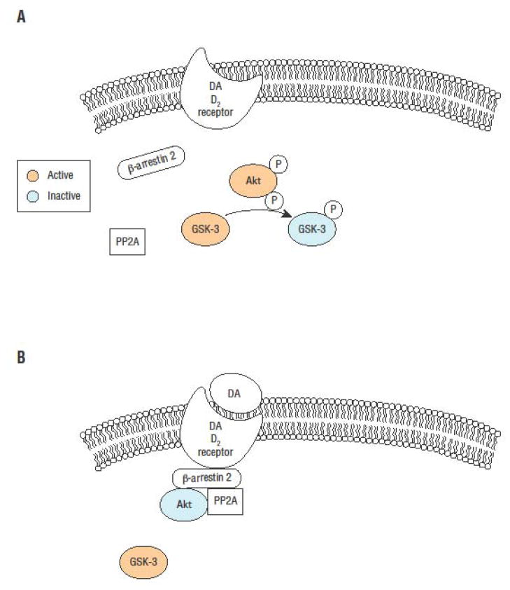
A) Phosphorylated Akt inactivates GSK-3 through phosphorylation. B) Binding of DA to the D2 receptor leads to recruitment of β-arrestin 2, a scaffolding protein, along with Akt and the phosphatase PP2A. PP2A dephosphorylates and inactivates Akt, resulting in increased GSK-3 activity.[35]
Non-canonical 경로가 주목받는 또 다른 이유는, 세포의 분열/분화, 자멸사 등 세포의 생사를 결정하는 Akt/GSK-3 경로가 β-arrestin 복합체를 통해 활성화되기 때문이다. Akt 는 protein kinase B라고도 알려져 있으며, Akt 1,2,3의 세 종류가 있다. 이중 특히 Akt 1은 세포의 생존에 가장 중요한 단백질 중 하나로 원발암 유전자18에 포함되는데, 공교롭게도 조현병 위험을 높이는 유전자로도 알려져 있다.[36,37]
18 원발암 유전자 (proto-oncogene): 염기서열에 변이가 생긴다 해도 모든 세포 내 유전자가 다 암을 일으키는 것은 아니다. 변이가 생겼을 때 특히 암 발생 위험을 높이는 유전자들을 원발암 유전자라고 한다. 이들은 주로 세포의 증식과 분화, 자멸사를 결정하는데 관여한다. 바이러스는 자신들의 증식을 위해 침범한 세포의 DNA에 바이러스 유전자를 끼워넣게 되는데, 이 유전자들 역시 증식과 분화에 주로 관여한다. 그래서인지 원발암 유전자들은 처음에 바이러스로부터 발견된 경우가 많다.
GSK-3에 대해 정신의학자들이 관심을 갖기 시작한 것은, 항조증 효과를 갖는 리튬의 작용 기전을 이해할 때 빼놓을 수 없기 때문이다. Akt1의 주된 작용은 GSK-3α 혹은 3β를 인산화하시켜 활성을 억제하는 것이다. [38] 리튬은 inositol phosphate가 재활용되는 것을 막아 PIP2의 농도를 낮추는데, 이와는 독립적으로 Akt1를 활성화시켜 GSK-3 활성을 억제한다. 이는 동물 모델에서 과다 행동을 가라앉히는 주요 기전으로 생각된다.[39] 리튬의 영향을 모순적인데, 왜냐하면 Akt1의 활성화되는데는 PIP2가 필요하기 때문이다.19
19 리튬이 PIP2 농도를 낮추는 것은 Akt1이 활성화되는 것을 방해하는 효과를 가져오지만, 직접적으로는 Akt1을 활성화시키기 때문이다.
그런데 리튬 말고도 많은 종류의 항정신병 약물들이 D2를 통해 Akt/GSK-3에 영향을 미친다는 것이 확인되었다.[40] 도파민 운반체를 knockout 시켜 도파민 활성을 높이면, Akt1의 활성은 떨어지고 GSK3의 활성은 높아진다. 이 쥐들에게 비가역적인 tyrosine hydroxylase inhibitor를 투여하여 급격하게 도파민 생성을 줄이거나, D2 길항제를 투여하면 Akt1/GSK-3 활성이 정상으로 회복되었다.[38] 이 실험결과는 Akt1/GSK3 경로가 도파민의 영향을 깊게 받고 있다는 분명한 증거로 여겨진다.
그런데 인위적으로 cAMP 농도를 변화시켜도 Akt1/GSK-3의 활성이 변화하지 않는다는 관찰결과로부터, D2 수용체가 Akt1/GSK3 활성을 조절하는 과정이 G 단백질을 통하지 않는다는 것이 확인되었다. D2 수용체를 통한 도파민의 자극은 Akt1, β-arrestin, protein phosphatase 2A (PP2A)가 서로 복합체를 이루는 것을 촉진시킨다. 이 복합체 내에서 PP2A가 Akt를 탈인산화시켜 작용을 억제하면, GSK-3 활성이 높아지는 것으로 이해되고 있다.[41] 따라서 항정신병 약물이 D2 수용체를 차단하면, β-arrestin이 세포막으로 동원되는 것을 막아 β-arrestin/Akt1/PP2A 복합체가 만들어지지 못하게 하므로 GSK-3 활성이 높아질 기회가 없어진다.[42]
4.3.3 Akt/mTOR 경로
D2 수용체를 통한 Akt1 조절도 중요하지만, 애초에 Akt1를 자극하는 가장 중요한 신호는 receptor tyrosine kinase를 통해 전달되는 인슐린과 다양한 성장인자 들이다 (Section 4.2.5).[[43]] Akt/mTOR 경로는 세포의 성장과 분화, 세포골격의 유지와 운동성을 조절하며, 그 때문에 신경발달과정 및 신경가소성에서 핵심 역할을 한다. mTOR 경로가 수상돌기 구조의 유지와 변형에 핵심 역할을 하고 있다는 것은 두가지 면에서 정신질환과 연관이 있다. 첫번째, 시냅스의 구조적, 기능적 유지 보수와 직접적 연관이 있다. 학자들은 mTOR 경로의 이상이 정신질환에서 발견되는 시냅스 기능이상의 주요한 원인이며, 약물 치료의 새로운 타깃이 될 수 있으리라 믿고 있다.[[44]] 두번째는 mTOR 경로의 붕괴때문에 신경발달과정에 문제가 생긴다는 견해이다.[[45]; [46]] 조현병의 신경발달학적 가설에 따르면 유전적/환경적 영향으로 신경발달과정에 문제가 생기면, 조현병을 비롯한 각종 정신질환이 차후에 발병할 위험이 높아진다. mTOR 경로가 이 과정을 매개하는 전략적 위치에 놓여있을 가능성이 높다.
한편 mTOR는 자가 포식(autophagy)을 억제하는 기능도 있는데, 이는 알츠하이머, 파킨슨 병 등 신경퇴행성 질환 뿐아니라, 조현병과 암페타민 정신증의 발생 기전과 연관된다. 또 다른 연구자들은 mTOR의 과다한 활성으로 정상적으로 이루어져야 하는 자가 포식이 일어나지 않으면 여러 가지 신경/정신 질환이 발생한다고 주장한다.[43] 이 가설이 맞다면 mTOR 억제제를 투여하면, 이들 질환 치료에 도움이 될 것이라 기대할 수 있다.[45]
그러나 mTOR의 활성을 조절하는 기전은 워낙 복잡하게 얽혀있어 얽힌 실타래를 하나하나 풀어내기가 무척 어렵다. 도파민만 해도 D2와 D1을 통한 영향이 정반대이다. D2를 통한 자극은 β-arrestin/Akt1/PP2A 복합체를 통해 Akt를 억제하여 mTOR 활성도 줄이지만, D1을 통한 자극은 오히려 mTOR 활성을 높이면서 자가 포식을 방해한다.[47]
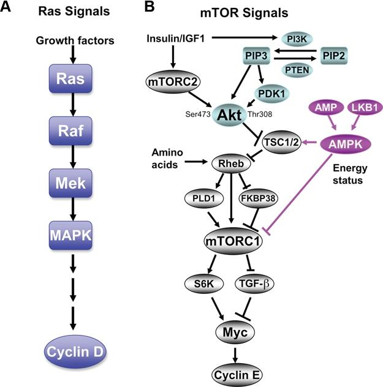
The mTOR pathway is complicated and has many inputs. The PI3K input involves the generation of PIP3 from PIP2, which recruits and activates PDK1, which then phosphorylates Akt at Thr308. Akt can then phosphorylate and suppress the GAP activity of TSC1/2. Suppression of TSC1/2 results in elevated activation of the GTPase Rheb, which then leads to a complex activation of mTORC1 via the activation of PLD1 and suppression of FKBP38 whereby elevated PLD activity generates the phosphatidic acid necessary for the formation of mTORC1 complex and FKBP38 dissociates from mTORC1.
4.3.4 Wnt/β-catenin 경로
Wnt 계열에 속하는 리간드들은 일종의 성장 촉진 인자들로서 세포의 분열과 분화, 발달 과정 중의 이동에 깊숙히 관여한다. 태생기의 발달과정, 그 중에서도 심장과 신경계통의 발생에 무척이나 중요하다. Wnt 체계는 비록 암의 발생기전을 연구하는 와중에 발견된 신호전달계이긴 하지만, 주요 정신질환의 신경발달가설을 지지하는 학자들로서는 Wnt 신호전달에 지대한 관심을 가질 수 밖에 없다.[49] 실제로 광범위 유전체 연합 연구(GWAS)를 통해 발견된 조현병의 취약성 유전자 중에는 Wnt/β-catenin-activated transcription factor (TCF4)와 Dickkopf 계열 유전자(Dkk family)가 속해있다., ?al-dujaili2021 또한 대표적인 취약성 유전자 중 하나인 DISC1 역시 GSK3β를 경유하여 Wnt 경로에 영향을 미친다.[50]
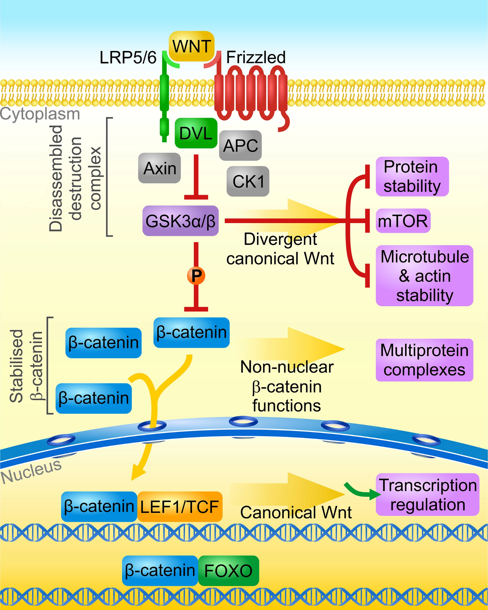
Canonical Wnt/β-catenin and divergent signaling pathways. The binding of a Wnt ligand to a Frizzled receptor and LRP5/6 co-receptor, followed by the recruitment of DVL to the receptor complex, leads to translocation and inhibition of the destruction complex, which consists of the kinase GSK3α/β, Adenomatous Polyposis Coli (APC) and Axin. The phosphorylation of β-catenin by GSK3α/β in the active destruction complex primes this protein for proteasomal degradation (not shown). Upon inhibition of the complex, β-catenin accumulates in the cytoplasm and translocates into the nucleus where it activates gene transcription as a co-activator of LEF1/TCFs. This canonical pathway can branch downstream (a) GSK3α/β inhibition (e.g., to slow protein degradation during mitosis, activate the mTOR pathway, or stabilize the cytoskeleton), (b) β-catenin stabilization (e.g., to stabilize cell adhesion with cadherins or facilitate the assembly of PDZ domain-containing proteins), and (c) β-catenin nuclear translocation (to activate gene transcription by interacting with nuclear receptors, FOXO and other transcription factors).
Wnt 리간드들은 Frizzled (Fzd)라고 불리우는 수용체에 결합하여 신호전달을 개시한다. Wnt 신호전달 역시 canonical과 non-canonical 경로로 나눌 수 있으며, β-catenin은 canonical 경로의 중심 단백질이다. Canonical 경로에서 Wnt는 LRP5/620을 보조 수용체로 하여 Fzd와 결합하며, Wnt/Fzd는 Disheveled (Dvl)를 끌어당겨 복합체를 이룬다. 세포 내에는 β-catenin destruction complex라는 구조가 존재하며, 여기에는 β-catenin과 함께 GSK-3, Axin, Dvl 등이 포함되어 있어서 평상시에는 일정 농도 이상의 β-catenin을 분해하도록 유도한다. 한편 Wnt 신호에 의해 Dvl이 자극받으면 β-catenin destruction complex의 구조를 변화시켜 그 기능을 억제하기 때문에, 결과적으로 β-catenin의 농도가 세포질과 핵 내에서 상승하는 효과를 낳는다.[38] β-catenin는 중요한 전사 인자인 TCF21를 활성화시킴으로써 다양한 단백질의 생성을 유도한다. 반면 non-canonical 경로는 planar cell polarity 경로와 Wnt/calcium 경로로 나뉘는데, 모두 β-catenin을 경유하지 않고 독자적으로 신호를 전달한다. 전자는 세포골격(cytoskeleton)을 유지, 보수하여 세포의 형태를 지탱하는 역할을 하며, 후자는 Ca2+ 신호전달을 조절한다.
20 Low density lipoprotein receptor-related protein 5 and 6 (LRP5, 6)
21 T cell factor/lymphoid enhancer factor‐1 family (TCF)
정신과 질환과 관련해서는 canonical 경로가 좀더 비중있게 다루어진다. 할로페리돌, 클로자핀을 비롯한 항정신병 약물은 β-catenin, GSK3β, and Dvl3를 직접 인산화하여 활성을 변화시키며, 동시에 단백질 생성을 유도하기도 한다.[35,52–54] Wnt 신호전달의 주된 효과를 한 마디로 요약한다면 GSK3β의 활성을 막아 자유로운 β-catenin 농도를 높이는 것이다. 항정신병 약물이 β-catenin, Dvl3 등에 직접 영향을 미치는 점을 차치하더라도 GSK3β 활성은 Akt에 의해 조절되기 때문에, 약물은 Akt를 통해서도 β-catenin 활성을 변화시킬 것이라 예상할 수 있다.[55]
항정신병 약물이 이들 주요 신경전달계에 강한 영향력을 행사하고 있음이 분명함에도 불구하고, 그 방향성을 한 마디로 요약하기는 어렵다. 도파민 신호를 차단하는 항정신병 약물들은 GSK-3 활성을 낮추기 때문에, β-catenin의 활성은 높일 것으로 이해되며 따라서 TCF의 조절을 받는 다양한 유전자들의 전사를 유도할 것으로 예상된다. 학자들은 이 작용이 수상돌기의 성장을 촉진하여 새로운 연결을 맺도록 유도하기 때문에, 약물의 장기적 치료 효과를 설명할 수 있는 중요한 열쇠라고 여긴다.[56] 그러나 반복적으로 약물을 투여하면 GSK-3 자체의 발현 또한 증가하기 때문에 결과적으로 β-catenin의 활성이 어떻게 변화하는지는 불분명하다.
이러한 논의들은 세포 내 신호전달계가 얼마나 서로 복잡하게 얽혀있고 얼마나 많은 상호연락(crosstalk)이 일어나고 있는지를 여실히 보여준다. 통제된 실험실에서는 다른 변수들을 고정시킨 상태에서, 상위 단계(upstream)의 물질 A가 하위 단계(downstream)에 있는 물질 B의 활성을 높이느냐 낮추느냐를 측정하지만, 실제 생체에서 A와 B 사이에 어떤 현상이 벌어지고 있는지를 파악하기가 쉽지 않다. 그럼에도 불구하고, 약물의 작용을 이해하기 위해, 조현병 뿐 아니라 많은 정신질환들의 발생과정을 추적하기 위해, 지금도 학자들은 부단한 노력을 기울여 이들 시스템을 연구하고 있다.[35,51,57,58]
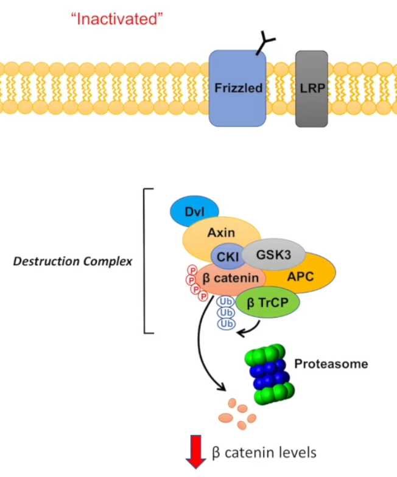
그림 설명: Wnt 신호가 들어오지 않는 비활성화 상태에서는 β-catenin destruction complex 내에서 GSK3가 β-catenin을 인산화시키며, 인산화 표지가 붙은 β-catenin는 β TrCP에 의해 유비퀴틴화(ubiquitination)되어 궁극적으로는 proteasome에 의해 분해된다. 이 때문에 일정 농도 이상의 β-catenin은 자동으로 분해된다.
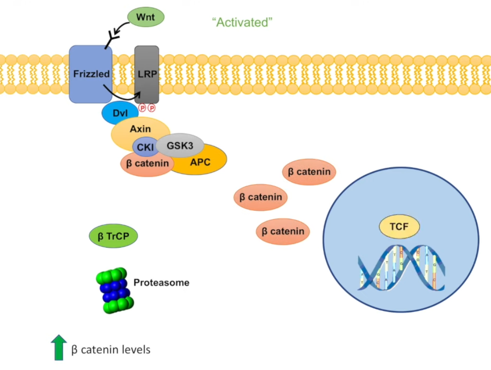
그림설명: 만약 Wnt 리간드가 Fzd에 결합하면, Fzd에 붙어있는 LRP가 인산화되고 이는 Dvl을 세포막 근처로 끌어당긴다. 이 과정에서 β-catenin destruction complex의 구조적 변화가 생겨 GSK3가 더 이상 β-catenin을 인산화시키지 못하게 되며, 이에 더하여 β TrCP의 유비퀴틴화도 일어나지 못한다. 활성이 급격히 상승된 β-catenin은 핵 내로 들어가 TCF를 자극함으로써 단백질 생성을 유도한다
4.3.5 MAPK/ERK 경로
조현병 환자가 암에 더 잘 걸리는지 덜 걸리는 지는 수십년 동안 역학 연구자들을 갸우뚱하게 만들었던 질문이다.22 1989년 Mortensen은 6,168명의 조현병 환자를 30여년간 추적한 끝에 이들의 암 발생률이 일반 대조군에 비해 낮았다고 보고하였다.[60] 물론 최근의 연구들은 과거의 역학조사가 잘못되었다는 것을 확인하고, 조현병 환자의 암 발생률이 일반인과 동일할 뿐 아니라 오히려 조기 진단을 놓쳐 사망하는 비율이 높은 편이라고 밝히고 있다.[61] 그러나 암과 조현병의 역설적인 관게는 수십년간 의학자들의 상상력을 자극했고, 조현병 취약성 유전자가 오히려 암에 대해선 방어인자로 작용한다던지[62,63], 항정신병 약물이 암을 예방하는 효과가 있다는 식의 뜬구름 잡는 가설 들이 지치지 않고 제기되었다.[64–66]
22 이 질문은 1909년에, 잉글랜드와 웨일즈의 정신질환 감독관 회의 정례보고서에서 처음 제기되었다고 한다.[59]
이런 영향때문인지 조현병을 연구하는 신경생화학자들은 유달리 원발암 유전자에 많은 관심을 쏟는다.(Section 4.3.2) 그럴 수 밖에 없는 것이, 암이란 세포의 분열과 분화, 생존과 사멸을 섬세하게 조절하는 기전이 손상된 것으로 이해되며, 동일한 기전이 신경세포의 태생기 발달 과정에 핵심 역할을 하기 때문이다. 심지어 성인에서도 이들 기전은 신경가소성을 통해 변화하는 환경에 적응하는 능력을 부여한다고 여겨지며, 정신질환의 치료에도 반복해서 강조되고 있다.[67,68] Akt, mTOR, Wnt/β-catenin 경로 역시 암 유발과 밀접한 연관이 있는 경로들이며, 아래에 소개할 MAPK/ERK 경로 역시 마찬가지이다.
MAPK/ERK 경로는 다른 말로 Ras-Raf-MEK-ERK 경로라고도 하며, 세포 분열을 촉진하는 mitogen의 작용을 매개하는 대표적인 경로이다. 모든 세포들의 세포 주기는 철저히 관리되고 있다. 완전히 분화된 세포는 G0 상태에 머물러 있으면서 더 이상 성장/분열하지 않지만, 그렇지 않은 세포들은 G1(성장), S(DNA 복제), G2(성장), M(분열)의 단계를 순환한다.
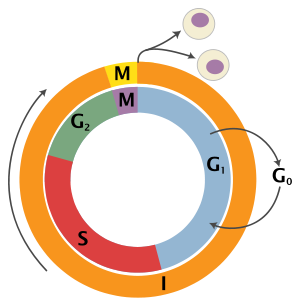
From wikipedia
이 순환을 조절하는 가장 중요한 단계는 소위 G1 관문(G1 checkpoint 혹은 restriction point)이라 불리우는 것으로, DNA 복제가 시작되는 S 단계로 진입할 지 아니면 다시 G0 상태로 되돌아갈 지를 결정한다. Mitogen은 바로 G1 관문에 영향을 끼쳐 S 단계로의 진입을 촉진하는 물질들이며, 이들은 주로 RTK를 거쳐 세포 내로 신호를 전달한다.(Section 4.2.5)
앞절에서 설명하였듯 RTK에 기질이 달라붙으면, 일련의 과정을 거쳐 Ras가 활성화된다. Ras는 small GTPase23에 속하는 단백질로 쥐에 육종(sarcoma)을 일으키는 바이러스에서 처음 발견되었다.24 Ras는 최초로 발견된 암 유발 유전자 중 하나로 지난 40년간 꾸준히 연구되어 오면서, 암에 대한 이해를 넓히는데 중추적인 역할을 담당해왔다.[69]
23 Small GTPase: 세포막에 분포하는 G 단백질 α 아단위에 대응하는, 세포질 내에 존재하는 효소이다. GTP를 GDP로 분해할 수 있다.
24 Ras는 Rous sarcoma virus protein의 약자이다. Rous는 실험에 많이 쓰이는 쥐의 일종이다.
G1 관문은 서로 다른 두 개의 작용이 미묘한 균형을 이루면서 조절된다. Ras와 그 하위 단계에 위치한 Raf-MEK-ERK는 G1 관문을 여는 중요한 작용 기전으로 세포 분열을 촉진시킨다.[48] 반면 암 억제 단백질인 p53을 중심으로 한 기전은 세포 분열을 중단시키고, 자멸사 쪽으로 유도한다.[70] Ras의 하위 단계에 있는 Raf와 MEK는 모두 serine/threonine 인산화 효소들이며, 결국 ERK(혹은 MAPK)를 활성화시키게 된다.
ERK는 extracellular signal-regulated kinase의 약자이며, 크게 mitogen-activated protein kinase (MAPK)라고 불리우는 단백질에 포함된다.25 활성화된 ERK는 세포 핵 내부로 이동하며, 여기서 초기 유전자26인 c-fos, c-jun, c-myc의 발현을 유도한다. c-fos와 c-jun은 서로 결합하여 전사 인자인 AP-1 복합체를 만들며, AP-1은 cyclin D의 발현을 유도한다. 궁극적으로 cyclin D는 G1 관문을 넘어서도록 하며, 한번 G1 관문을 넘어선 세포는 성장 인자의 도움을 받지 않아도 세포 분열을 지속한다.[71]
25 MAPK에는 EKR 말고도 c-Jun N-terminal kinase (JNK)과 p38 kinase가 포함되며, 각자 독특한 방식으로 세포 주기에 관여한다.
26 초기 유전자 (immediate early gene, IEG): 외부 자극을 받은 세포가 본격적인 유전자 전사와 단백질 생성을 개시하기 전에, 이를 보조하기 위해 임시로 발현시키는 유전자를 말한다. 이들은 스스로가 전사 인자(transcription factor)이거나 다른 방식의 DNA 결합 단백질이며, 보다 나중에 시작되는 유전자 전사를 촉진시키거나 억제한다. 자극에 대해 반응하는 속도가 빠르기 때문에 immediate early라는 이름이 붙여졌다. 이들은 전사를 돕는 기능 외에도, 학습과 기억에 관여한다고 알려져 있다.
이렇게만 보면 암을 일으키는 경로가 조현병과 무슨 상관이 있을까 싶은데, 1990년대부터 2000년대 초에 걸쳐 수많은 연구자들이 항정신병 약물 및 전기경련 치료가 MAPK/ERK 경로에 미치는 영향을 조사해왔다.[72–77] 예를 들어 할로페리돌을 1회 투여하면, ERK 1/2의 인산화가 증가하는데 비해, 클로자핀을 1회 투여하면 오히려 감소한다.[73] 이와는 반대로, 반복적으로 투여할 경우 할로페리돌은 ERK 1/2 활성에 미미한 영향만을 주지만, 클로자핀은 전전두엽에서 ERK 1 /2 활성을 증가시킨다.[77] 이러한 차이점들은 정형 약물과 비정형 약물의 작용 기전을 구분하는데 중요한 의미를 가지며, 특히 클로자핀의 독특한 치료 효과를 설명하는데도 간과할 수 없는 단서가 된다.[75]
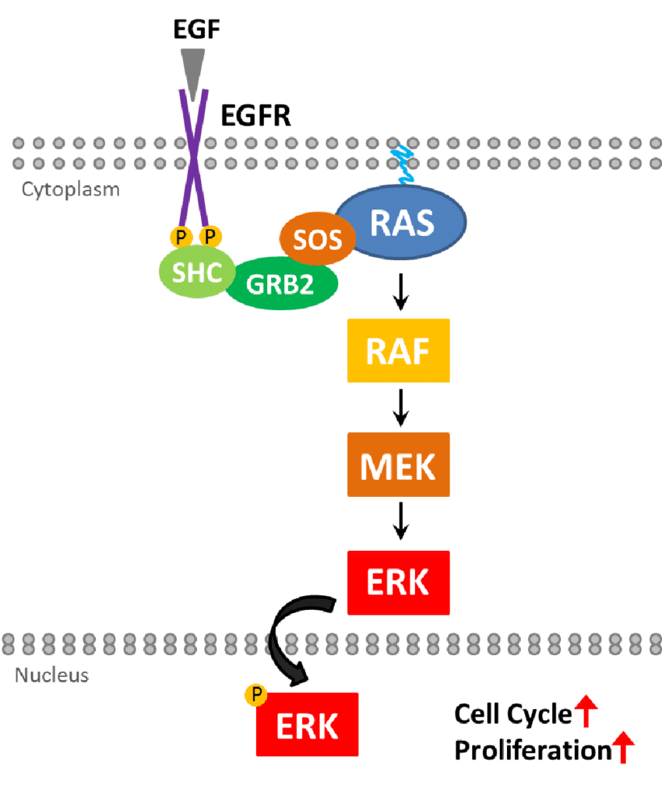
From “FADD and its Phosphorylation Mediate Mitogenic Signaling in Mutant Kras
Tumors” by Brittany Bowman (PhD thesis)
4.4 세포 내 신호전달계를 연구하는 목적
약물학의 고전적 패러다임은 열쇠와 자물쇠의 관계로 요약할 수 있다. 세포막에는 무척이나 다양한 종류의 자물쇠가 있고, 동시에 이를 여는 열쇠(내인성 리간드)가 있어서 생체 기능을 조절한다. 약물은 원래의 열쇠를 그럴듯하게 카피한 인공적 열쇠로 원하는 자물쇠를 열 수 있다. 현재까지 조현병의 발병 기전을 연구한다는 것은 어떤 자물쇠가 있는지를 탐구하는 작업이었다고 해도 과언이 아니다. 항정신병 약물은 D2 차단제를 중심으로 개발되었기 때문에, “자물쇠가 열리는 것을 방해하는” 물질이라고 표현할 수 있다. 하지만 조현병의 발병 기전을 “D2라는 자물쇠가 열리기 때문”이라고 설명하거나, 약물의 작용기전을 “자물쇠가 열리는 것을 막는” 혹은 또 다른 “자물쇠를 여는” 것이라는 설명은 공허하고 불성실한 대답일 뿐이다.
세포 내 신호전달계를 연구하는 것은 다름 아니라, 자물쇠가 열린 후 어떤 일이 발생하는지를 연구하는 것이다. 지금까지도 신경망을 일종의 전자회로에 빗대어, 일부 회선을 차단하거나 새로 연결하면 신경망이 원하는 결과를 내놓을 것이라고 믿는 경향이 있다. 그러나 인간의 뇌 속에 존재하는 신경망은 살아 움직이는 생물학적 구조물로 스스로 구조를 바꿔나간다. 단순히 신호가 전달되고 안 되고가 문제가 아니라, 어떻게 전달되느냐가 매우 중요한 의미를 띤다. 신경전달물질은 단순히 신호를 주고 받는 매개체가 아니라, 신경세포의 생과 사를 결정하고, 새로운 가지를 뻗게 하거나 거둬들여 효율적인 네트워크를 형성하도록 유도하는 물질로 이해되어야 한다. 항정신병 약물의 효과가 약물 투여를 시작한 후 상당한 시간이 지나야 나타난다는 사실은, 이를 뒷받침한다. 신경망의 기능이 달라지려면 구조가 변화해야 하고, 구조가 변화하려면 단백질이 합성되어야 할텐데, 세포 내 신호전달계는 바로 외부 환경변화를 단백질 합성으로 이어주는 중간 다리 역할을 담당한다.
또한 “어떻게 전달되느냐”는 약물 들 사이의 효과와 부작용 차이를 가져오기 때문에, 이를 이해하기 위해서라도 세포 내 신호전달계를 이해해야 한다. 신경계에는 수용체의 종류도 많고, 이들의 아형 또한 매우 다양하지만, 세포 내 신호전달계가 갖는 복잡함과 다양함에는 비교할 수 없다. 그만큼 자유도가 높은 시스템이기 때문에, 약물들은 각자 나름의 고유한 효과를 갖게 될 수 있다.
초기의 연구자들은 정형 약물과 비정형 약물의 차이를 이해하기 위해서, 그리고 클로자핀의 우수성을 설명하기 위해 신호전달계 및 궁극적 종착역인 유전자 발현에 미치는 영향을 밝히는데 매진했다.[78] 이 과정에서 연구자들이 공통적으로 발견한 것은, 비정형 약물이 신호전달계에 미치는 영향이 정형 약물의 경우보다 훨씬 더 복잡하였으며, 대체로 신경세포의 가소성/회복 탄력성을 더욱 증가시키는 방향으로 작용한다는 것이었다.[79] 비정형 약물을 장기간 사용하면 신경세포의 분열과 증식이 늘며, 스트레스에 의한 신경세포 퇴행을 막아준다는 것도 많은 연구자들의 상상력을 사로잡았다.[80] 이렇게 축적된 연구 결과들은 이후 세대로 하여금 항정신병 약물의 작용을 이해하는 지평을 훨씬 넓힐 수 있게 하였다.